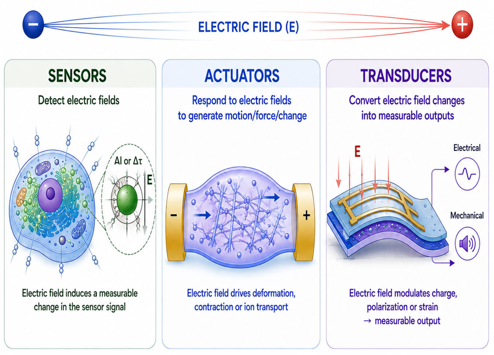

Electric field‑responsive sensors, actuators and transducers
Electric fields are fundamental to many biological processes, yet the development of materials capable of sensing and responding to these signals with precision remains relatively underexplored. Our research engineers quantum nanomaterials that interact with electrical signals, enabling us to probe, understand and ultimately manipulate biological systems in new ways.
